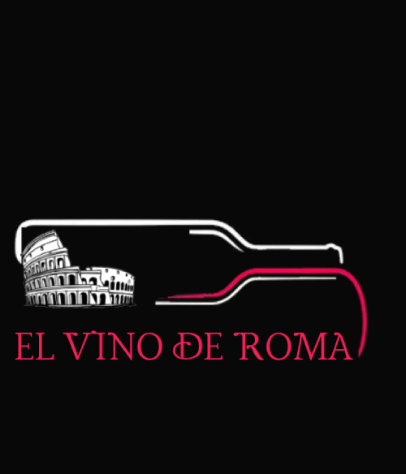
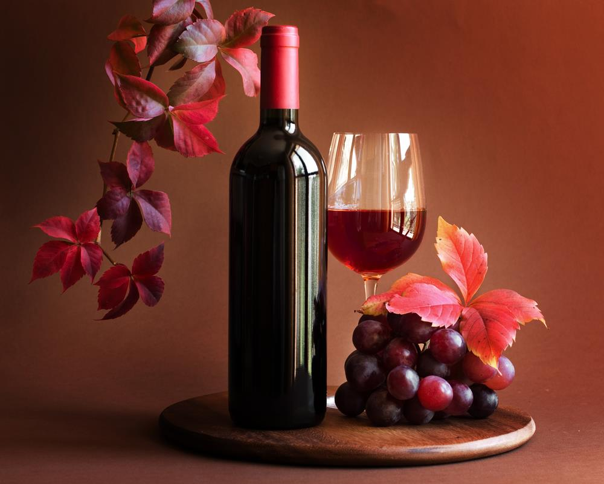

Inicio
Nosotros
Tipos de vinos
Precios y ofertas
Contactos
Clasificación según el color del vino
Vino tinto: de color rojo, el cual puede ser pálido o rubí, o púrpura. Se produce con uvas rojas o azulosas.
